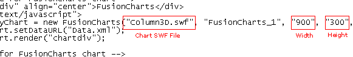

Converting the chart to a Pie chart
In our previous example, we had created a 3D Column Chart using the FusionCharts visual tool. In this example, we'll create a Pie chart for the same data. We would NOT be using the visual GUI in this example, as our data is already present. We just need to create a new HTML and change the SWF file reference to create a new chart. To do so,
- Copy Pie3D.swf from Download Package > Charts into our MyFirstChart folder. This sets our Pie chart up for use later.
- Create a copy of Chart.html and save it as ChartPie.html in the same folder.
- Open ChartPie.html in any text editor (Notepad etc.). Here, you'll need to change the name of SWF file and width and height of chart as shown under:

- Make the relevant changes as under:

As you can see above, we've updated the chart from Column3D.swf to Pie3D.swf and set a new width of 550 and height of 300. Save this page and view in browser. You'll now get the following pie chart: